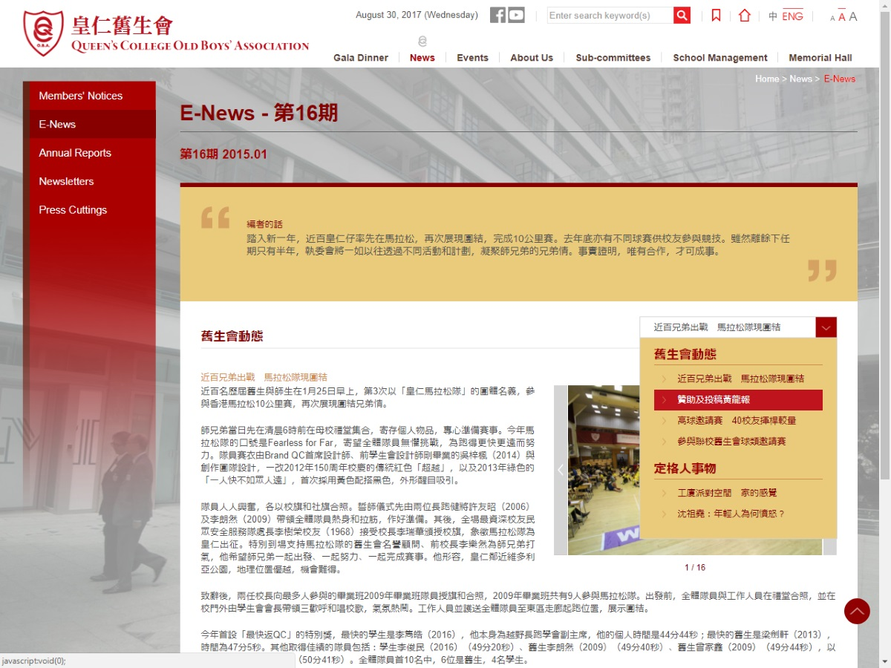

Projects - theOrigo
2017
-
HKU SPACE SEA CHINA
A business institute opened by HKUSPACE aimed for business workers in the Mainland. The first site produced upon new workspace. This site is based on Bootstrap and created with Grunt packages. Also learnt new skills like ratio on scaling for building responsive website instead of setting multiple breakpoints.
Take a Look
Projects - WZL (3 yrs)
2017
-
Basic Law Court Case Portal Site
This site was built for the Basic Law. A responsive approach with CSS3 animations attached. The site shows the closest court case with reference to current date in which the logical algorithm is quite a fascinating experience.
Take a Look -

WSD Main Website
I assisted building several styles and pages during the development stage. Contents are also input by the team as well in around 3 MONTHS.
Take a Look -
Hitachi Fridge Campaign 2017
An animation guide for customer to choose the right fridge for their preset kitchen. Users are able to download their designed kitchen in jpeg file.
Take a Look
Tight scheduled campaign built from rough work and launch to production within a week.
Adaptive Approach
Only VanillaJS (plain js) and greensock (GSAP) have been used in the project. -
Basic Law e-Quiz (for internal use)
This was built for government internal use. Outsiders were forbidden to access the site lest to complete the quiz. This is a development copy only.
Take a Look
This project adopted drag and drop concept on desktop version while dropdown in mobile version. Due to responsive nature, these two methods share the same skeleton and coding. The keypoint will be making changes in desktop version will be in sync with mobile version.
2016
-
UAF i-Money Mobile (Web)
UAF has a mobile app version of this project beforehand which was done by another firm. But was said that the app was inconvenient. As a result, this project is kicked off. The flow was required to follow 100% of the mobile application but in terms of HTML. The structure of the progress bar is a spotlight for this project.
Take a Look -
Electronic Health Record Sharing System (Phase II & III)
I revamped this site index page two times. The time Phase II just ends, Phase III has already started development. sigh......
Take a Look -

Outstanding PolyU Alumni Association
Take a Look -

WingFat Printing Main Website
This site was designed by another firm appointed by the client beforehand. Its original designs did not take responsive concept into account. However, the client insists the outline of the original one. Therefore, only slight changes were made during development. For some component like menu, the current structure did not set a good example for responsive design. This is one of the pities for this project.
Take a Look -
SHK Kingshill Website
Framework built from rough.
Take a Look
Adaptive approach
One page and seamless-designed application without reload while changing the URL manually.
The same framework has been reused for many other similar properties website. -

EMSD Main Website
I assisted building several styles and pages during the development stage. Contents are also input by the team as well in around 3 MONTHS.
Take a Look -
HongKongPost Main Website
I assisted building several styles and pages during the development stage. Contents are also input by the team as well in around 2 MONTHS.
Take a Look -
FTLife Insurance Company Limited Main Website
I assisted building several styles and pages during the development stage. Contents are also input by the team as well in around 2 MONTHS.
Take a Look -
KFC JoinUs Revamp
Develop 10 brand new pages for JoinUs Section
Take a look
The last tab includes a form embedded in .asp file.
The information filled in the form will be verified before pushing to mail server using PHP.
And then send to the client's address.
2015
-
PolyU Main Website
Maintain website accessibility issue and bug fixing.
Take a look
e.g. Attach trapezium banner with mouseover feature. -

Queen's College Old Boys' Association
Take a look -
Emperor Financial Service Group
Take a look -
Energy Saving For All - EMSD
My first full project handled by myself in WZL. An adaptive approach.
Take a look
2014
-
The TannerHill Website
First project in WZL. Learn and work in the meantime in selection printing via iframe, build photo and video (youtube, mp4 together) gallery. And lots of basic HTML structure and concept.
Take a look -
-
KFC Main Website
Contract to hosting server for KFC has ended this year start.
Take a look
Update opening/closing restaurant information
Help replace images and promotions prepared by the designer.
Develop new promotion campaign when requested, e.g. Pancake song (by 小塵埃), career section revamp -
BMCPC Main Website
I assisted building several styles and pages during the development stage.
Take a look
Restricted